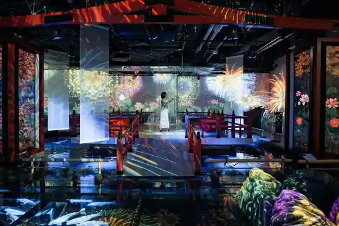
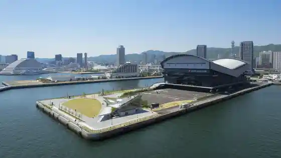
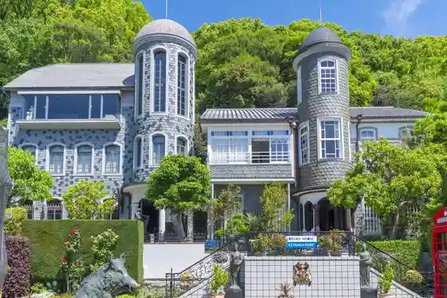

AQUARIUM × ART átoa
Kobe, Hyogo · 078-771-9393 · Official / source link

GLION ARENA KOBE
Kobe, Hyogo · Official / source link

Uroko no Ie
Kobe, Hyogo · 0120-888-581 · Official / source link

Kobe Aguri Park (Kyu : Nogyo Park)
Kobe, Hyogo · 078-962-4321 · Official / source link
Dezain Kurieiteibu Center Kobe (KIITO)
Kobe, Hyogo · 078-325-2201 · Official / source link
Nana Farm Suma
Kobe, Hyogo · 078-733-7722 · Official / source link
Ferishimochokoreto Museum
Kobe, Hyogo · 078-325-5767 · Official / source link
Merigan Park
Kobe, Hyogo · 078-321-0085 · Official / source link
Mitsui Autoretto Park Marinpia Kobe
Kobe, Hyogo · 078-709-4466 · Official / source link
Yasuhisa Ryo Shrine
Kobe, Hyogo · 078-411-5135 · Official / source link
Rokko Garden Terasu
Kobe, Hyogo · 078-894-2281 · Official / source link
Nankin Town
Kobe, Hyogo · 078-332-2896 · Official / source link
Nunobiki Falls
Kobe, Hyogo · 0570-090-800 · Official / source link
Maya Yama Mari Hoshi Dai
Kobe, Hyogo · 078-861-2998 · Official / source link
Akashi Kaikyo Bridge
Kobe, Hyogo · 078-291-1033 · Official / source link
Arima Hon Onsen Kin Baths
Kobe, Hyogo · 078-904-0680 · Official / source link
Arima Onsen
Kobe, Hyogo · Official / source link
Arima Onsen Taiko Baths
Kobe, Hyogo · 078-904-2291 · Official / source link
Sakura Masamune Memorial Museum Sakura Utage
Kobe, Hyogo · 078-436-3030 · Official / source link
Sawa no Tsuru Museum
Kobe, Hyogo · 078-882-7788 · Official / source link
Zuiho Tera Park
Kobe, Hyogo · 078-904-0708 · Official / source link
Ikuta Shrine
Kobe, Hyogo · 078-321-3851 · Official / source link
Hakutsuru Shuzo Museum
Kobe, Hyogo · 078-822-8907 · Official / source link
Kobe Dobutsu Okoku
Kobe, Hyogo · 078-302-8899 · Official / source link
Kobe Anpanman Kodomo Museum & Moru
Kobe, Hyogo · 078-341-8855 · Official / source link
Kobe Haba Land
Kobe, Hyogo · 078-360-3639 · Official / source link
Kobe Pototawa
Kobe, Hyogo · Official / source link
Kobe Mita Puremiamu Autoretto
Kobe, Hyogo · 050-1724-2174 · Official / source link
Kobe Ritsu Rokkosan Ranch
Kobe, Hyogo · 078-891-0280 · Official / source link
Kobe Ritsu Oji Zoo
Kobe, Hyogo · 078-861-5624 · Official / source link
Kobe Nunobiki Habu Sono / Ropuei
Kobe, Hyogo · 078-271-1160 · Official / source link
Kobe Minato Kuruzu
Kobe, Hyogo · Official / source link
Kobe Minato Shinsai Memorial Park
Kobe, Hyogo · 078-321-0085 · Official / source link
Kobe Shushin Kan (Fukuju)
Kobe, Hyogo · 078-841-1121 · Official / source link
Kobe Suma Shiiwarudo
Kobe, Hyogo · 078-731-7301 · Official / source link
Kiku Masamune Shuzo Memorial Museum
Kobe, Hyogo · 078-854-1029 · Official / source link
Suma Urayama Ue Yuen
Kobe, Hyogo · 078-731-2520 · Official / source link
Kazamidori no Kan
Kobe, Hyogo · 078-242-3223 · Official / source link